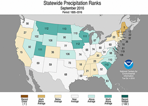
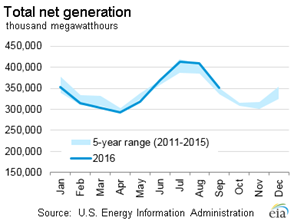
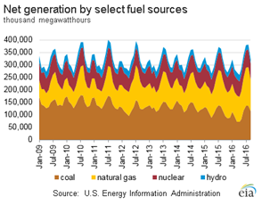
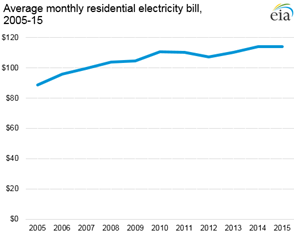
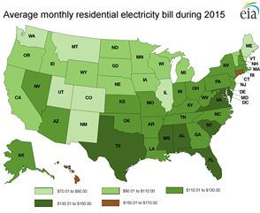
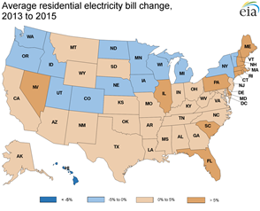

Electricity Monthly Update
With Data for September 2016 | Release Date: Nov. 29, 2016 | Next Release Date: Dec. 23, 2016
Previous Issues
Highlights: September 2016
- Texas (ERCOT) wholesale electricity prices reached a new 12-month high of $75/MWh on September 20 during a period of high electricity demand.
- Wholesale electricity prices and demand varied widely at most hubs during the month as summer turned to fall.
- U.S. coal stockpiles decreased 1.4% from the previous month, deviating from the normal seasonal pattern whereby overall coal stockpiles usually increase in September.
Key Indicators
| September 2016 | % Change from September 2015 | |
|---|---|---|
| Total Net Generation (Thousand MWh) |
351,692 | 0.4% |
| Residential Retail Price (cents/kWh) |
12.87 | -1.2% |
| Retail Sales (Thousand MWh) |
332,378 | -0.1% |
| Cooling Degree-Days | 241 | 7.1% |
| Natural Gas Price, Henry Hub ($/MMBtu) |
3.05 | 12.1% |
| Natural Gas Consumption (Mcf) |
951,179 | 2.3% |
| Coal Consumption (Thousand Tons) |
62,430 | -3.7% |
| Coal Stocks (Thousand Tons) |
158,169 | -2.4% |
| Nuclear Generation (Thousand MWh) |
65,420 | -1.6% |



Average electricity bills for residential customers rose in 2014, dipped slightly in 2015
 Source: U.S. Energy Information Administration, Annual Electric Power Industry Report (Form EIA-861)Average monthly electric bills for residential customers in the United States increased between 2013 and 2014, then fell slightly in 2015.
Average monthly bills are calculated by dividing the total reported residential electric sales revenues by the total number of residential customers. After a steady upward trend from 2005 to 2010, average monthly bills fell in 2011 and 2012. Average monthly bills rose in 2013 and 2014. The average monthly bill in 2014 was up by more than 3% to $114.09. Bills declined slightly-by 6 cents-in 2015 to $114.03.
 Source: U.S. Energy Information Administration, Annual Electric Power Industry Report (Form EIA-861)Top ten highest and lowest average residential electricity bills in 2015
Connecticut had the highest residential average monthly bill in 2015, at $153.13, and was the only New England state in the top ten. Although the average residential monthly electric bill in Connecticut is much higher than the national average, Connecticut consumers used 731 kWh monthly, which is less than the national average of 901 kWh.
Hawaii, which has traditionally had the highest monthly retail residential bills, dropped to second place in 2015. The state relies primarily on imported fuel oil for electricity generation, which resulted in electricity revenue per kWh that was nearly three times the national average. Hawaii's average revenue for electricity has dropped significantly since 2014, as world oil prices fell from $100 per barrel (or higher) to the current $30-$50 per barrel range. This drop in oil prices, coupled with growth in solar-powered generation in Hawaii, has reduced the cost of retail power in the state. The residential bill in 2015 was 20% lower than in 2013.
Six of the top ten states with the highest average residential bills are southern states (South Carolina, Alabama, Mississippi, Texas, Florida, and Virginia). Because states in this region have high cooling demand, customers have high bills despite the fact that their rates are below the national average of 12.65 cents per kWh. The other two states in the top ten are Maryland and Delaware.
| State | Number of customers | Average monthly consumption (kWh) | Average revenue per kWh (cents/kWh) | Average monthly bill ($) |
|---|---|---|---|---|
| Connecticut | 1,468,958 | 731.41 | 20.94 | 153.13 |
| Hawaii | 428,339 | 513.87 | 29.60 | 152.12 |
| South Carolina | 2,185,965 | 1,145.92 | 12.57 | 144.04 |
| Alabama | 2,182,616 | 1,218.28 | 11.70 | 142.48 |
| Maryland | 2,255,556 | 1,012.44 | 13.82 | 139.91 |
| Mississippi | 1,270,397 | 1,217.54 | 11.27 | 137.24 |
| Texas | 10,318,006 | 1,176.36 | 11.56 | 136.00 |
| Florida | 8,963,967 | 1,141.23 | 11.58 | 132.16 |
| Delaware | 413,445 | 977.36 | 13.42 | 131.18 |
| Virginia | 3,332,083 | 1,148.64 | 11.37 | 130.58 |
| U.S. total | 129,811,718 | 901.00 | 12.65 | 114.03 |
| Source: U.S. Energy Information Administration, Annual Electric Power Industry Report (Form EIA-861) | ||||
Of the ten states with the lowest bills in 2015, nine states (New Mexico, Utah, Colorado, Maine, Montana, Illinois, Wyoming, Minnesota and Michigan) had consumption per customer that was lower than the national average of 901 kWh. Washington has lower bills as a result of their abundant, low-cost hydro resources.
| State | Number of customers | Average monthly consumption (kWh) | Average revenue per kWh (cents/kWh) | Average monthly bill ($) |
|---|---|---|---|---|
| New Mexico | 871,047 | 635.42 | 12.47 | 79.23 |
| Utah | 1,021,839 | 743.52 | 10.88 | 80.92 |
| Colorado | 2,225,725 | 688.35 | 12.12 | 83.42 |
| Maine | 699,241 | 555.64 | 15.61 | 86.75 |
| Washington | 2,945,760 | 963.87 | 9.09 | 87.64 |
| Montana | 491,422 | 818.24 | 10.88 | 89.03 |
| Illinois | 5,172,653 | 719.26 | 12.50 | 89.91 |
| Wyoming | 268,226 | 831.61 | 10.97 | 91.19 |
| Minnesota | 2,374,674 | 762.00 | 12.12 | 92.32 |
| Michigan | 4,282,858 | 649.06 | 14.42 | 93.61 |
| U.S. total | 129,811,718 | 901.00 | 12.65 | 114.03 |
| Source: U.S. Energy Information Administration, Annual Electric Power Industry Report (Form EIA-861) | ||||
The states with the most change in average bills from 2013 to 2015
Monthly residential bills in twelve states increased by more than 5% between 2013 and 2015. Of that group, five states in New England had the highest percentage increase in their average monthly bill: Rhode Island (25.2%), Massachusetts (18.1%), Connecticut (16.0%), New Hampshire (11.9%), and Maine (9.6%). These states tend to have more costly regulation and higher taxes than in other parts of the country. New England uses primarily natural gas for electric generation and heating. Constraints on winter supply from natural gas pipelines makes the region susceptible to price spikes. These factors likely contribute to the region's increased electricity bills.
Of the remaining seven states with the highest increases in bills, the District of Columbia had the highest percent increase-nearly 21% between 2013 and 2015. Two other states in the Middle Atlantic (Delaware and Pennsylvania) had increases of 7.3% and 6.4%, respectively. In the South Atlantic region, Florida had an increase of 8.8%, and South Carolina had an increase of 6.8%. Illinois, which had one of the lowest average monthly average revenues per kWh in 2013, has reversed direction. From 2013 to 2015, it had a 12.1 percent growth. Nevada also experienced a large increase of that two-year period, growing by nearly 6%.
The state with the largest percentage reduction was Hawaii. Its average bill went down by 20.1 percent between 2013 and 2015.
 Source: U.S. Energy Information Administration, Annual Electric Power Industry Report (Form EIA-861)Principal Contributor:
Stephen Scott
(Stephen.Scott@eia.gov)
End Use: September 2016
Retail rates/prices and consumption
In this section, we look at what electricity costs and how much is purchased. Charges for retail electric service are based primarily on rates approved by state regulators. However, a number of states have allowed retail marketers to compete to serve customers and these competitive retail suppliers offer electricity at a market-based price.
EIA does not directly collect retail electricity rates or prices. However, using data collected on retail sales revenues and volumes, we calculate average retail revenues per kWh as a proxy for retail rates and prices. Retail sales volumes are presented as a proxy for end-use electricity consumption.
Average revenue per kWh by state


Average revenue per kilowatthour figures decreased in 21 states and the District of Columbia in September compared to last year. The largest declines were found in Nevada (down 12.1%), Mississippi (down 9.9%), and the District of Columbia (down 4.8%). Thirty states increased compared to last year, led by Minnesota (up 8.3%), West Virginia (up 7.9%), and Maine (up 7.7%).
Total average revenues per kilowatthour were down 1.0% to 10.69 cents in September compared to last year. All sectors were down on the month, from a 4.5% drop in the Transportation sector to a 0.8% drop in the Industrial sector. Retail sales were down overall (0.1%) to 332,378 gigawatthours (GWh). The Residential, Commercial, and Transportation sectors showed slight gains of 2.9%, 0.9%, and 3.6%, respectively, while the Industrial sector showed a decline of 6.0%.
Retail sales


State retail sales volumes were down in 30 states in September compared to last year. Nevada recorded the largest year-over-year decline, down 7.8%, Arizona and California had the next largest declines, down 7.2 and 6.1%, respectively. Twenty-one states and the District of Columbia had retail sales volume increases in September, led by Georgia (up 8%), Tennessee (up 7.6%), and Maryland (up 5.5%).


September 2016 was the warmest September in 136 years of modern record-keeping, according to a monthly analysis of global temperatures by scientists at NASA's Goddard Institute for Space Studies (GISS) in New York. Cooling Degree Days (CDD) were higher across most of the country, up in 27 states and the District of Columbia compared to last September. Three states had an over 50-percent-increase in CDDs. The largest year-over-year increase was found in Rhode Island, followed by Washington and Georgia, all of which had an over 50% increase in CDDs from September 2015 to September 2016. Twenty-three states had less CDDs than last September, with these states mostly found in the Mountain West. North Dakota had the largest CDD decrease of any state, followed by Wyoming, Wisconsin, and Minnesota.
Resource Use: September 2016
Supply and fuel consumption
In this section, we look at the resources used to produce electricity. Generating units are chosen to run primarily on their operating costs, of which fuel costs account for the lion's share. Therefore, we present below, electricity generation output by fuel type and generator type. Since the generator/fuel mix of utilities varies significantly by region, we also present generation output by region.
Generation output by region

Net generation in the United States increased by only 0.4% from the previous September. This occurred because the country, as a whole, experienced above average temperatures that were very similar to the above average temperatures experience last year. At the regional-level, the MidAtlantic, Southeast, Florida, and Texas, all saw increases in electricity generation compared to September 2015, while the Northeast, Central, and Western regions all saw decreases in electricity generation.
The change in electricity generation from coal compared to the previous September was mixed throughout the country. The Northeast, Southeast, and Texas all saw increases in coal generation from the previous year, with the largest percent increase occurring in the Northeast (23.2%), where coal is used very sparingly as a fuel to generate electricity. One of the primary reasons for this increased coal generation in the Northeast was the large year-over-year increase in coal generation that occurred at the Bridgeport Station coal plant in Connecticut. However, it should be noted that Bridgeport Station is trying to transition operations so that natural gas can be used at the plant to generate electricity. Conversely, the MidAtlantic, Central, Florida, and the West regions saw a decrease in coal generation, with the Central region seeing the largest percent decrease (-9.1%) in coal generation.
The change in natural gas generation was also mixed throughout the country, with the MidAtlantic, Central, Southeast, and Florida all observing increases in natural gas generation compared to last year, while the Northeast, Texas, and the West regions all saw decreases in natural gas generation. As a whole, nuclear generation was down 1.6% compared to the previous September, while renewables generation was up 14.8% compared to last year.
Fossil fuel consumption by region
The chart above compares coal consumption in September 2015 and September 2016 by region and the second tab compares natural gas consumption by region. Changes in coal and natural gas consumption closely mirrored the change in natural gas generation.
The third tab presents the change in the relative share of fossil fuel consumption by fuel type on a percentage basis, calculated using equivalent energy content (Btu). This highlights changes in the relative market shares of coal, natural gas, and petroleum. In September 2016, the Central and Mid-Atlantic regions experienced the largest increases in the share of natural gas consumption at the expense of coal consumption. Only the Northeast, Texas, and West saw coal consumption increase at the expense of natural gas compared to the previous year.
The fourth tab presents the change in coal and natural gas consumption on an energy content basis by region. The changes in total coal and natural gas consumption were similar to the changes seen in total coal and natural gas net generation in each region.
Fossil fuel prices
To gain some insight into the changing pattern of consumption of fossil fuels over the past year, we look at relative monthly average fuel prices. A common way to compare fuel prices is on an equivalent $/MMBtu basis as shown in the chart above. The average price of natural gas at Henry Hub increased from the previous month, going from $2.88/MMBtu in August 2016 to $3.05/MMBtu in September 2016. The natural gas price for New York City (Transco Zone 6 NY) decreased significantly from the previous month, going from $2.06/MMBtu in August 2016 to $1.33/MMBtu in September 2016.
The New York Harbor residual oil price increased from the previous month, going from $7.67/MMBtu in August 2016 to $7.79/MMBtu in September 2016. Regardless, oil used as a fuel for electricity generation is almost always priced out of the market.
A fuel price comparison based on equivalent energy content ($/MMBtu) does not reflect differences in energy conversion efficiency (heat rate) among different types of generators. Gas-fired combined-cycle units tend to be more efficient than coal-fired steam units. The second tab shows coal and natural gas prices on an equivalent energy content and efficiency basis. For the fourth consecutive month, the price of natural gas at Henry Hub was above the price of Central Appalachian coal on a $/MWh basis. This was mainly due to the increase in the price of natural gas at Henry Hub. The price of natural gas at New York City on a $/MWh basis was still below the price of Central Appalachian coal for a seventh consecutive month, with the spread between the two prices increasing due to the decrease in the price of natural gas at New York City.
The conversion shown in this chart is done for illustrative purposes only. The competition between coal and natural gas to produce electricity is more complex. It involves delivered prices and emission costs, the terms of fuel supply contracts, and the workings of fuel markets.
Regional Wholesale Markets: September 2016
The United States has many regional wholesale electricity markets. Below we look at monthly and annual ranges of on-peak, daily wholesale prices at selected pricing locations and daily peak demand for selected electricity systems in the Nation. The range of daily prices and demand data is shown for the report month and for the year ending with the report month.
Prices and demand are shown for six Regional Transmission Operator (RTO) markets: ISO New England (ISO-NE), New York ISO (NYISO), PJM Interconnection (PJM), Midwest ISO (MISO), Electric Reliability Council of Texas (ERCOT), and two locations in the California ISO (CAISO). Also shown are wholesale prices at trading hubs in Louisiana (into Entergy), Southwest (Palo Verde) and Northwest (Mid-Columbia). In addition to the RTO systems, peak demand is also shown for the Southern Company, Progress Florida, Tucson Electric, and the Bonneville Power Authority (BPA). Refer to the map tabs for the locations of the electricity and natural gas pricing hubs and the electric systems for which peak demand ranges are shown.
In the second tab immediately below, we show monthly and annual ranges of on-peak, daily wholesale natural gas prices at selected pricing locations in the United States. The range of daily natural gas prices is shown for the same month and year as the electricity price range chart. Wholesale electricity prices are closely tied to wholesale natural gas prices in all but the center of the country. Therefore, one can often explain current wholesale electricity prices by looking at what is happening with natural gas prices.
Wholesale prices

Wholesale electricity prices varied widely throughout the month at most hubs, which can happen in a shoulder month such as September. Weather and subsequently energy prices and demand can resemble hot summer-like or cooler fall conditions depending on the region and time of month. The wide range in prices was most pronounced in the Northeast and in Texas. In the Northeast, daily on-peak wholesale electricity prices in New England (ISONE) ranged between $25-$64/MWh. In New York State (NYISO), prices ranged between $18-$56/MWh and in the Mid-Atlantic, prices in PJM ranged between $28-$60/MWh during the month. In Texas (ERCOT), prices reached a new 12-month high of $75/MWh on September 20 during a period of high electricity demand (65,713 MW peak on September 20) before falling to only $25/MWh on September 30 when demand was at significantly lower levels (45,671 MW).
Wholesale natural gas prices set or were close to 12-month highs across most hubs outside of the Northeast and Mid-Atlantic. Yearly highs were set in the Midwest at Chicago Citygates ($3.09/MMBtu), Louisiana at the Henry Hub ($3.19/MMBtu), Texas at the Houston Ship Channel ($3.21/MMBtu), and in Northern California at PG&E Citygate ($3.56/MMBtu). Wholesale natural gas prices set 12-month lows during the month in New York City at Transco Z6 NY ($0.64/MMBtu) and in the Mid-Atlantic at Tetco M-3 ($0.67/MMBtu).
Electricity system daily peak demand

{kind=link}
{kind=link}
{kind=link}
{kind=link}
{kind=link}
{kind=link}
{kind=link}
Electricity system daily peak demand covered a wide-range in each region during the month except in the Northwest (Bonneville Power Administration, BPA), as early-September summerlike temperatures gave way to more autumn-like conditions later in the month. Such large variations in electricity demand present challenges for grid operators, who must match generation to demand at all times. Large intra-day and intra-month demand swings, combined with the arrival of fall shoulder season generator and transmission maintenance, can test operators in ways that more steady summer or winter conditions do not.
In the Northeast, peak demand in ISONE and NYISO reached 23,024 megawatts (MW) and 29,637 MW, respectively, on September 9, but hit only 13,503 MW and 17,593 MW, respectively, on September 24. In the Mid-Atlantic, peak demand in PJM reached 143,033 MW on September 8 but only 88,051 MW on September 30. In the Midwest, peak demand in MISO reached 110,784 MW on September 6, not far off MISO's 12-month high, before falling to a daily peak of only 74,220 MW on September 30. And in Texas, peak demand in ERCOT reached 66,884 MW on September 19 before reaching only 44,299 MW just seven days later on September 26. The sole outlier to this trend was BPA, where daily peak demand remained in a tight range between 5,589 MW and 6,675 MW during the month.
Electric Power Sector Coal Stocks: September 2016
In September, U.S. coal stockpiles decreased to 158 million tons, down 1.4% from the previous month. This small decrease in total coal stockpiles deviates slightly from the normal seasonal pattern whereby historically, coal stockpiles have begun to increase in September.
Days of burn
The average number of days of burn held at electric power plants is a forward-looking estimate of coal supply given a power plant's current stockpile and past consumption patterns. For bituminous units largely located in the eastern United States, the average number of days of burn increased from 89 days of burn in August to 92 days of forward-looking days of burn in September. For subbituminous units largely located in the western United States, the average number of days of burn increased, going from 84 days in August to 87 days in September.
Coal stocks and average number of days of burn for non-lignite coal by region (electric power sector)
| September 2016 | September 2015 | August 2016 | ||||||||
|---|---|---|---|---|---|---|---|---|---|---|
| Zone | Coal | Stocks (1000 tons) | Days of Burn | Stocks (1000 tons) | Days of Burn | % Change of Stocks | Stocks (1000 tons) | Days of Burn | % Change of Stocks | |
| Northeast | Bituminous | 5,487 | 95 | 6,924 | 102 | -20.8% | 5,291 | 98 | 3.7% | |
| Subbituminous | 136 | 97 | 758 | 201 | -82.0% | 153 | 131 | -10.7% | ||
| South | Bituminous | 27,339 | 88 | 31,931 | 89 | -14.4% | 27,916 | 84 | -2.1% | |
| Subbituminous | 5,631 | 68 | 5,586 | 62 | 0.8% | 5,899 | 67 | -4.5% | ||
| Midwest | Bituminous | 16,549 | 99 | 15,023 | 82 | 10.2% | 16,831 | 99 | -1.7% | |
| Subbituminous | 40,862 | 84 | 38,090 | 69 | 7.3% | 40,679 | 82 | 0.4% | ||
| West | Bituminous | 5,885 | 84 | 5,378 | 73 | 9.4% | 5,715 | 79 | 3.0% | |
| Subbituminous | 30,830 | 95 | 32,155 | 90 | -4.1% | 31,529 | 92 | -2.2% | ||
| U.S. Total | Bituminous | 55,260 | 92 | 59,256 | 87 | -6.7% | 55,753 | 89 | -0.9% | |
| Subbituminous | 77,459 | 87 | 76,588 | 77 | 1.1% | 78,259 | 84 | -1.0% | ||
Source: U.S. Energy Information Administration
NOTE: Stockpile levels shown above reflect a sample of electric power sector plants, which were used to create the days of burn statistics. These levels will not equal total electric power sector stockpile levels.
Methodology and Documentation
General
The Electricity Monthly Update is prepared by the Electric Power Operations Team, Office of Electricity, Renewables and Uranium Statistics, U.S. Energy Information Administration (EIA), U.S. Department of Energy. Data published in the Electricity Monthly Update are compiled from the following sources: U.S. Energy Information Administration, Form EIA-826,“Monthly Electric Utility Sales and Revenues with State Distributions Report,†U.S. Energy Information Administration, Form EIA-923, "Power Plant Operations Report," fuel spot prices from Bloomberg Energy, electric power prices from SNL Energy, electric system demand data from Ventyx Energy Velocity Suite, and weather data and imagery from the National Oceanic and Atmospheric Administration.
The survey data are collected monthly using multiple-attribute cutoff sampling of power plants and electric retailers for the purpose of estimation for various data elements (generation, stocks, revenue, etc.) for various categories, such as geographic regions. (The data elements and categories are “attributes.”) The nominal sample sizes are: for the Form EIA-826, approximately 450 electric utilities and other energy service providers; for the Form EIA-923, approximately 1900 plants. Regression-based (i.e., “prediction”) methodologies are used to estimate totals from the sample. Essentially complete samples are collected for the Electric Power Monthly (EPM), which includes State-level values. The Electricity Monthly Update is based on an incomplete sample and includes only regional estimates and ranges for state values where applicable. Using ‘prediction,’ it is generally possible to make estimates based on the incomplete EPM sample, and still estimate variances.
For complete documentation on EIA monthly electric data collection and estimation, see the Technical Notes to the Electric Power Monthly. Values displayed in the Electric Monthly Update may differ from values published in the Electric Power Monthly due to the additional data collection and data revisions that may occur between the releases of these two publications.
Accessing the data: The data included in most graphics can be downloaded via the "Download the data" icon above the navigation pane.Some missing data are proprietary and non-public.
Key Indicators
The Key Indicators in the table located in the "Highlights" section, are defined below. The current month column includes data for the current month at a national level. The units vary by statistic, but are included in the table. The "% Change from 2010" value is the current month divided by the corresponding month last year (e.g. July 2011 divided by July 2010). This is true for Total Generation, Residential Retail Price, Retail Sales, Degree-Days, Coal Stocks, Coal and Natural Gas Consumption. The Henry Hub current month value is the average weekday price for the current month. The Henry Hub "% Change from 2010" value is the average weekday price of the same month from 2010 divided by the average weekday price of the current month.
Total Net Generation: Reflects the total electric net generation for all reporting sectors as collected via the Form EIA-923.
Residential Retail Price: Reflects the average retail price as collected via the Form EIA-826.
Retail Sales: Reflects the reported volume of electricity delivered as collected via the Form EIA-826.
Degree-Days: Reflects the total population-weighted United States degree-days as reported by the National Oceanic and Atmospheric Administration.
Natural Gas Henry Hub: Reflects the average price of natural gas at Henry Hub for the month. The data are provided by Bloomberg.
Coal Stocks: Reflects the total coal stocks for the Electric Power Sector as collected via the Form EIA-923.
Coal Consumption: Reflects the total coal consumption as collected via the Form EIA-923.
Natural Gas Consumption: Reflects the total natural gas consumption as collected via the Form EIA-923.
Nuclear Outages: Reflects the average daily outage amount for the month as reported by the Nuclear Regulatory Commission's Power Reactor Status Report and the latest net summer capacity data collected on the EIA-860 Annual Generator Report.
Sector Definitions
The Electric Power Sector comprises electricity-only and combined heat and power (CHP) plants within the North American Industrial Classification System 22 category whose primary business is to sell electricity, or electricity and heat, to the public (i.e., electric utility plants and Independent Power Producers (IPPs), including IPP plants that operate as CHPs). The All Sectors totals include the Electric Power Sector and the Commercial and Industrial Sectors (Commercial and Industrial power producers are primarily CHP plants).
Degree Days
Degree-days are relative measurements of outdoor air temperature used as an index for heating and cooling energy requirements. Heating degree-days are the number of degrees that the daily average temperature falls below 65° F. Cooling degree-days are the number of degrees that the daily average temperature rises above 65° F. The daily average temperature is the mean of the maximum and minimum temperatures in a 24-hour period. For example, a weather station recording an average daily temperature of 40° F would report 25 heating degree-days for that day (and 0 cooling degree-days). If a weather station recorded an average daily temperature of 78° F, cooling degree-days for that station would be 13 (and 0 heating degree days).
Per Capita Retail Sales
The per capita retail sales statistics use 2011 population estimates from the U.S. Census Bureau and monthly data collected by the Energy Information Administration. The volume of electricity delivered to end users for all sectors in kilowatthours is divided by the 2011 population estimate for each state.
Composition of Fuel Categories
Net generation statistics are grouped according to regions (see Electricity Monthly Update Explained Section) by generator type and fuel type. Generator type categories include:
Fossil Steam: Steam turbines powered by the combustion of fossil fuels
Combined Cycle: Combined cycle generation powered by natural gas, petroluem, landfill gas, or other miscellaneous energy sources
Other Fossil: Simple cycle gas turbines, internal combusion turbines, and other fossil-powered technology
Nuclear Steam: Steam turbines at operating nuclear power plants
Hydroelectric: Conventional hydroelectric turbines
Wind: Wind turbines
Other renewables: All other generation from renewable sources such as geothermal, solar, or biomass
Other: Any other generation technology, including hydroelectric pumped storage
Generation statistics are also displayed by fuel type. These include:
Coal: all generation associated with the consumption of coal
Natural Gas: all generation associated with the consumption of natural gas
Nuclear: all generation associated with nuclear power plants
Hydroelectric: all generation associated with conventional hydroelectric turbines
Other Renewable: all generation associated with wind, solar, biomass, and geothermal energy sources
Other Fossil: all generation associated with petroleum products and fossil-dervied fuels
Other: all other energy sources including waste heat, hydroelectric pumped storage, other reported sources
Relative Fossil Fuel Prices
Relative fossil fuel prices are daily averages of fossil fuel prices by month, displayed in dollars per million British thermal units as well as adjusted for operating efficiency at electric power plants to convert to dollars per megawatthour. Average national heat rates for typical operating units for 2010 were used to convert relative fossil fuel prices.
Average Days of Burn
Average Days of Burn is defined as the average number of days remaining until coal stocks reach zero if no further deliveries of coal are made. These data have been calculated using only the population of coal plants present in the monthly Form EIA-923. This includes 1) coal plants that have generators with a primary fuel of bituminous coal (including anthracite) or subbituminous, and 2) are in the Electric Power Sector (as defined in the above "Sector definitions"). Excluded are plants with a primary fuel of lignite or waste coal, mine mouth plants, and out-of-service plants. Coal storage terminals and the related plants that they serve are aggregated into one entity for the calculation of Average Days of Burn, as are plants that share stockpiles.
Average Days of Burn is computed as follows: End of month stocks for the current (data) month, divided by the average burn per day. Average Burn per Day is the average of the three previous years’ consumption as reported on the Form EIA-923.
These data are displayed by coal rank and by zone. Each zone has been formed by combining the following Census Divisions:
- Northeast — New England, Middle Atlantic
- South — South Atlantic, East South Central
- Midwest — West North Central, East North Central
- West — Mountain, West South Central, Pacific Contiguous
Coal Stocks vs. Days of Burn Stocks
The coal stocks data presented at the top of the Fossil Fuel Stocks section (“Coal Stocks”) will differ from the coal stocks presented in the Days of Burn section (“DOB Stocks”) at the bottom of the Fossil Fuel Stocks section. This occurs because Coal Stocks include the entire population of coal plants that report on both the annual and monthly Form EIA-923. The DOB Stocks only include coal plants that report on the monthly Form EIA-923 and have a primary fuel of bituminous (including anthracite) or subbituminous as reported on the Form EIA-860.